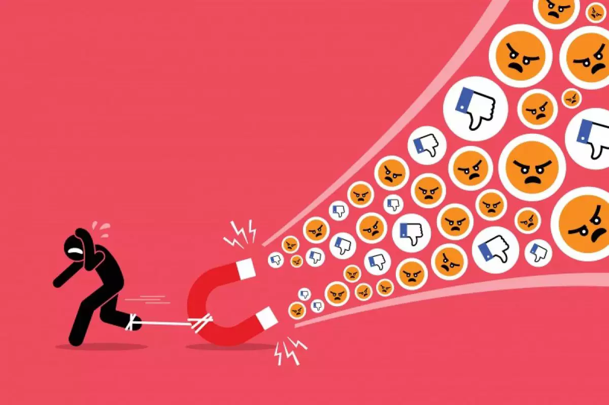

As redes sociais são ótimas para nos conectarmos, mas às vezes a negatividade online pode pesar. Aqui estão algumas dicas para lidar com isso:
Primeiro, considere limitar o tempo que você passa nas redes sociais. Isso pode ajudar a reduzir a exposição a conteúdo negativo. Além disso, escolha cuidadosamente quem você segue e bloqueie ou mute contas que postam coisas tóxicas.Cuidar da sua saúde mental é essencial. Praticar atividades que te façam bem, como meditação, exercícios ou hobbies, pode ajudar a aliviar o estresse das redes sociais. Manter contato com amigos e familiares fora das redes também pode ser reconfortante.Evite se envolver em discussões acaloradas e não alimente a negatividade. Em vez disso, siga contas que compartilham mensagens positivas e inspiradoras.Se a negatividade online estiver afetando muito sua saúde mental, não hesite em procurar ajuda profissional. Um profissional de saúde mental pode oferecer apoio e orientação.
